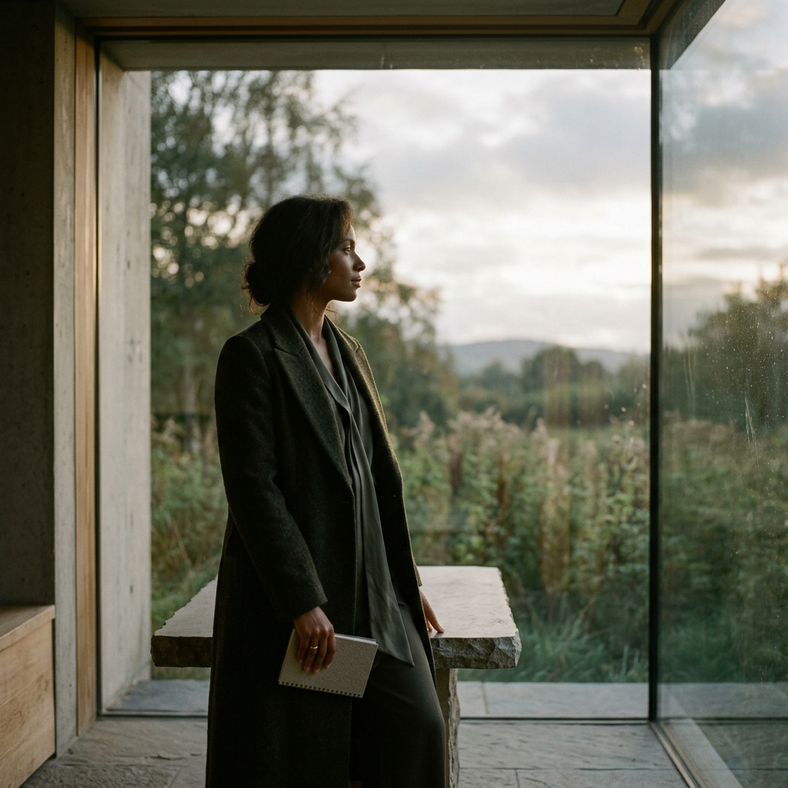
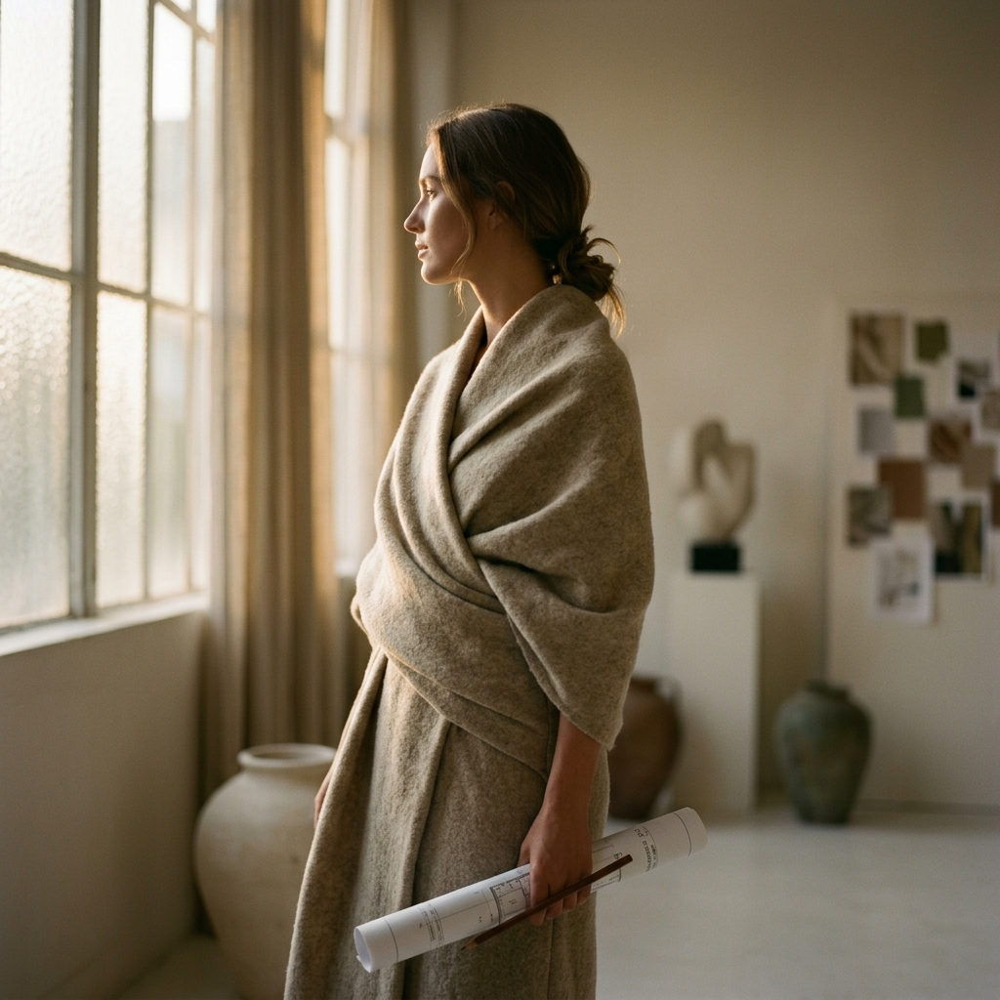
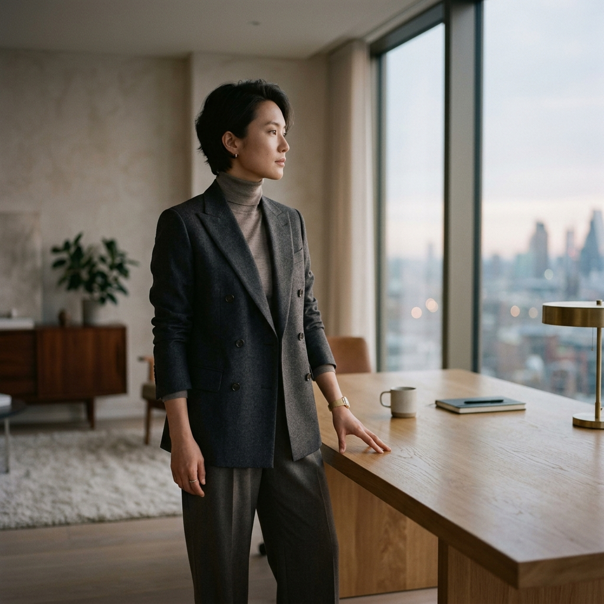

Filosofía Corporativa
Nuestra Identidad

El Significado de Nuestra Marca
El Nudo que
El Nudo que
no se Desata
La arquitectura del nombre se fundamenta en la DOBLE "N". Las dos "N" representan visualmente la trama y la urdimbre de un telar ancestral, y el zig-zag del tejido en el telar tradicional.
Naturaleza
El respeto por el ciclo biológico, el animal y el ecosistema del páramo.
Nobleza
La sofisticación del siglo XXI y el diseño elegante.
"La doble N de LANNA simboliza el nudo indisoluble entre la tradición textil del Altiplano y la vanguardia del ecodiseño. Entre lo que la tierra nos da y lo que nosotros hacemos con ello. Es el encuentro entre la fibra virgen y la sofisticación del siglo XXI."
Misión, Visión y Equipo
Quiénes Somos
Misión: Crear prendas elegantes inspiradas en el Altiplano Cundiboyacense, con enfoque sostenible integrado — desde el pastoreo hasta el patronaje.
Visión: Consolidar una marca que combine tradición, diseño contemporáneo y permanencia. Una prenda LANNA nunca pasa de moda.



"Diseñamos en simbiosis con la cordillera. No tomamos más de lo que devolvemos. Cada prenda respira con el páramo, se abriga con el frailejón y regresa al suelo que la vio nacer."